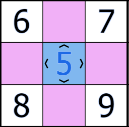
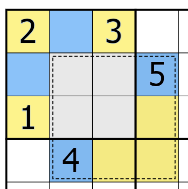
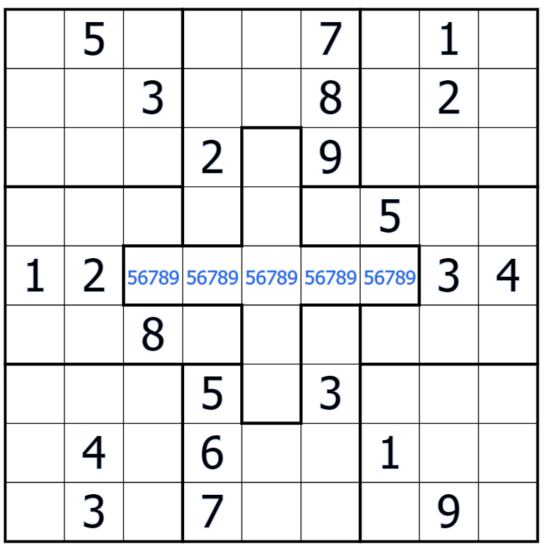
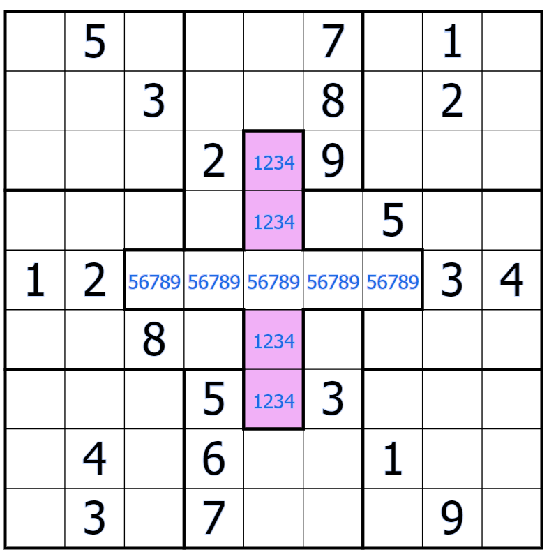
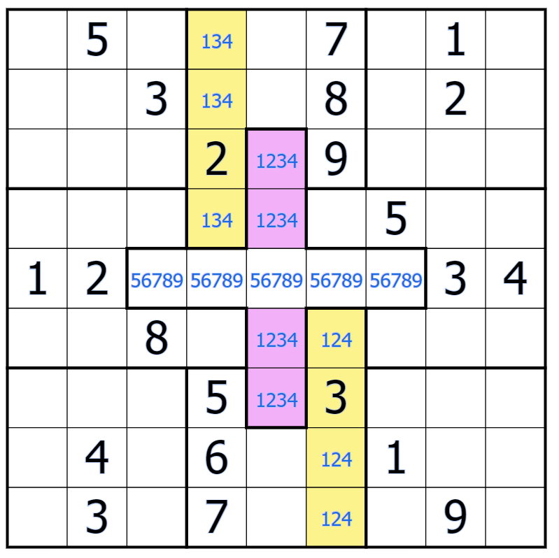

Perhaps you've seen a sudoku that doesn't apply to any of the variants covered above--some of the digits may be highlighted, there might be lines with bulbs, there's dots--the list of their variety is endless. Thankfully, there's some common variants that are must-knows in the sudoku community; these will be explained in the articles below.
Classic sudoku rules apply. Additionally, digits along a bulbed line
(commonly referred to as thermometers) must be in increasing order. Digits may not
repeat on thermometers.
+ There are exceptions to the last sentence, specifically slow thermos. This
allows digits to repeat on thermometers, as long as it's still in ascending order.
The main aspect of thermo sudokus is immediate elimination: notably that 1s can
only go on the bulb end of a thermo, and 9s can only go on the tip. Most
beginner-level sudokus will use this kind of elimination.
There's also a general restrictive property on thermos. Let's look at the
diagram below as an example:
Because thermos can only go in increasing order from the bulb, the digit on the tip
must be 8--this is the only digit higher than 7 that's still valid in this region
(see the given 9).
The reverse is true for lower digits:
The only digit lower than 2 is one, so the bulb of this thermo must contain said digit 1.
Classic sudoku rules apply. Additionally, digits connected by a white
dot are consecutive to each other, and digits connected by a black dot must be in a
1:2 ratio.
+ Some consecutive/kropki sudokus may include a rule known as a "negative
constraint"--that is, no orthogonally adjacent** cells except those indicated may
be consecutive/in a 1:2 ratio. If this is not written down, then it's implied that
unindicated cells may be consecutive to/in a 1:2 ratio with each other.
Technically speaking, these are two different variants, but because they're so commonly used in tandem, it would be easier to explain these in the same article.
Firstly, kropki, i.e. the black dots. There are two special restraints that come with this variant:
Secondly, consecutive, i.e. the white dots. There aren't many strategies for consecutive dots other than common sense, but there are some strange uses for them that may come in handy when you seek out sudoku solving.
Classic sudoku rules apply. Additionally, the digits in shaded cells must be greater than its adjacent neighbours.
On paper, the logic behind fortress sudokus are easy enough to follow: the lowest
digits in a column, row, or region can never be inside a shaded cell; likewise the
highest in said regions can never be adjacent to a shaded cell.
The difficulty arises when you're putting that logic into context. The best way
to work around this is to consider the fortress as not just the shaded cell, but the
adjacent cells around it. Take the following visual as an example:
+ In this instance, the whole fortress in contained inside one region--but if you have a fortress that crosses over regions, it's best to just consider the region that contains the most fortress cells.
Notice the shaded cell (i.e., the cell with arrows) in the middle. This must be greater than at least 4 digits. Also notice that digits 6, 7, 8, and 9 are taken; this leaves digits 12345. 5 is the only digit greater than the remaining 4 digits, and so, must be the digit in the shaded cell.
Classic sudoku rules apply. Additionally, fill every shaded region with the digits 1-9.
There are two core strategies for extra regions.
The first is realising that, because the shaded region must also be filled
with digits 1-9, it is susceptible to column and row restraints. See the image below
as an example:
The second is realising that both normal and extra regions are forced to coexist. Both must contain the digits 1-9--this means that, in specific cases of overlap, you can eliminate digits in specific areas of an extra region.
In the case of this image, the 1, 2, and 3 can't go into the shaded 2x2 inside its own region, so they must go on the outside edge of the extra region. Likewise, the extra region's 4 and 5 can't go in that same 2x2 square, so they must go into the unshaded area of the upper left box.
Classic sudoku rules apply. However, some or all regions are irregularly shaped (i.e., not 3x3 squares).
I believe that a warning is in place. This variant is one of the hardest to explain-- mainly because there's infinite possibilities for irregular regions, and you will need to see the unique relationships between a given sudoku's regions--something that pure memorising will not prepare you for. For this reason, this article will not be giving you information--rather, it will be explaining a way of thinking about irregular regions.
The common link between all irregular sudokus is column and row constraints. Regions will usually be designed around these restrictions. Let's go through an example of this structure:
You can fill in the rest of the middle with digits 5-9. Because this row also happens to be part of a region (the central cross), you can fill in the rest of the region like so:
You may notice that the 1/2/3/4 cells create a group, which means that those digits cannot go anywhere else in that column except their marked spots. You can use this for restrictive purposes on regions that contain this column (i.e., the 2nd and 8th regions). Pleasantly, this gives us the following:
You may be noticing ways to move forward by now. If you do, then I highly encourage you to continue on your own and analyse the rest of this example's regions for yourself.